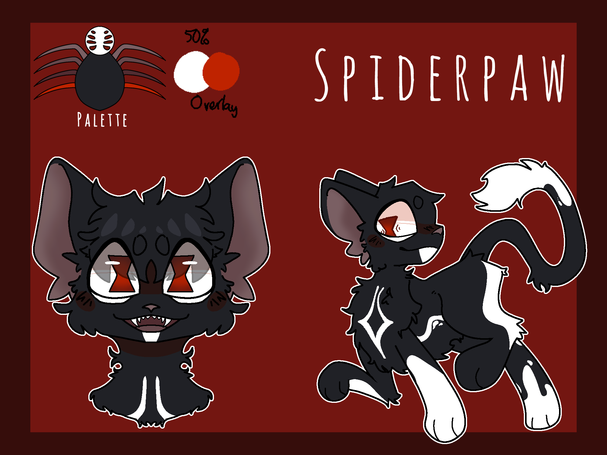

Spiderpaw

Information
Information

text
Spiderpaw is a seemingly normal apprentice; however, when disaster strikes he is trapped in an endless timeloop, where he is forced to kill off his clanmates (directly and indirectly) to avoid his own endless death. Eventually Asphodelpaw finds out and starts helping him, which leads to more murders and eventually the two of them being cast out from the clan.
Spiderpaw was featured in Round 4 (OLD), where he was a Serial Killer. He ultimately met his end when the majority of the clan chose Briarberry to win over him.